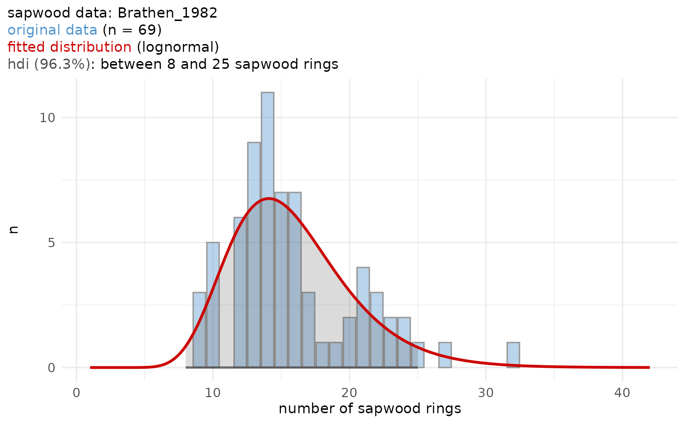

Sapwood data set for Western Sweden published by Bräthen in 1982.
Format
A tibble of 2 variables:
- n_sapwood
number of sapwood rings
- count
number of times n_sapwood was observed
Source
Bräthen A. 1982. A tree-ring chronology from the western part of Sweden. Sapwood and a dating problem, in: Hackens T., Mejdahl V. (Eds.), Second Nordic Conference on the Application of Scientific Methods in Archaeology, PACT 7(1). pp. 27–35.
Examples
sw_data_info("Brathen_1982")
#> $data
#> [1] "Brathen_1982"
#>
#> $citation
#> [1] "Bräthen A. 1982. A tree-ring chronology from the western part of Sweden. Sapwood and a dating problem, in: Hackens T., Mejdahl V. (Eds.), Second Nordic Conference on the Application of Scientific Methods in Archaeology, PACT 7(1). pp. 27–35."
#>
#> $area
#> [1] "Western Sweden"
#>
#> $n_observations
#> [1] 69
#>
#> $summary_raw_data
#> Min. 1st Qu. Median Mean 3rd Qu. Max.
#> 9.00 13.00 15.00 15.84 18.00 32.00
#>
sw_model("Brathen_1982", plot = TRUE)
